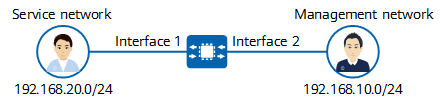

Service and Management Isolation Configuration
Context
Management plane (or O&M plane): carries O&M data flows of the device.
Control plane (or signaling plane): carries protocol interaction data flows of the device.
Service plane (or forwarding/user plane): carries information forwarding data flows of the device.
After the three planes are isolated, if one plane is attacked, the operations and security of other planes are not affected. For example, if the service plane is subject to a DoS attack, the management plane will be unaffected. The administrator can then log in to the management plane to eliminate the DoS attacks. If, on the other hand, the planes are not isolated, such an attack would cause the processing tasks on the service plane to further occupy resources such as CPU and memory resources until the resources are fully exhausted. In such cases, the administrator would be unable to manage the device.
Isolating the service plane from the management plane is to isolate service interface traffic from the traffic of the management interface, and is implemented as follows:
- Management data is prevented from being sent from service interfaces (physical isolation). That is, users on the service network cannot use a device's service interface to access the management network that is connected to the management interface of the device.
- Service interfaces and the management interface are bound to different VPNs (logical isolation). As such, data cannot be transmitted between any service interface and the management interface.
Procedure
- Enable service plane and management plane isolation to prevent management data from being sent through the service plane.
system-view undo management-plane isolate disable
By default, service plane and management plane isolation is enabled.
- Bind service interfaces and the management interface to different VPNs to ensure that they cannot communicate with each other.

- You are advised to bind service interfaces to different VPN instances based on your service requirements. That is, bind specific services only to necessary service interfaces to implement fine-grained service isolation.
- The loopback interface used for managing the device can also be bound to the management VPN instance.
- To isolate the service plane and management plane on an IPv6 network, first run the ipv6-family [ unicast ] command in the VPN instance view to enable the IPv6 address family of the VPN instance.
Example
In Figure 1, the service network on the 192.168.20.0/24 network segment is connected to interface 1 (service interface) of the device; the management network on the 192.168.10.0/24 network segment is connected to interface 2 (management interface) of the device. VPN-based logical isolation is configured on the device to isolate the service plane and management plane. This is to prevent 192.168.20.0/24 from communicating with 192.168.10.0/24, ultimately protecting the device against attacks caused by address leakage on the management interface.
In this example, Interface 1 refers to 10GE0/0/1, and Interface 2 refers to MEth0/0/0.

Configuration script:
# ip vpn-instance management ipv4-family # ip vpn-instance service ipv4-family # interface MEth0/0/0 ip binding vpn-instance management ip address 192.168.10.1 255.255.255.0 # interface 10GE0/0/1 ip binding vpn-instance service ip address 192.168.20.1 255.255.255.0 # return